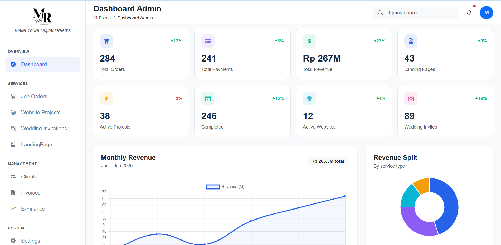
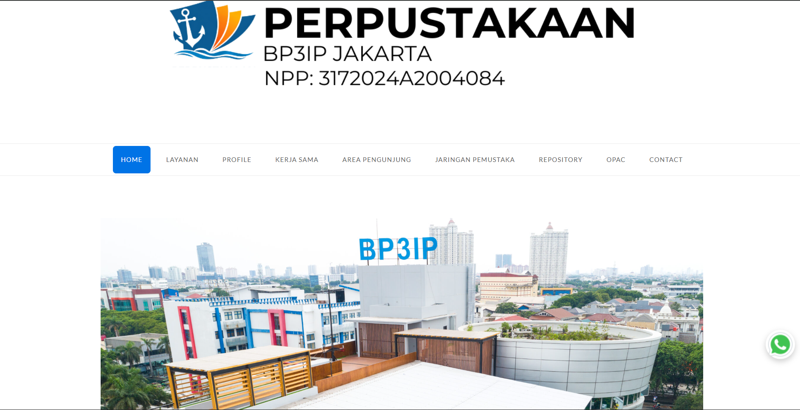
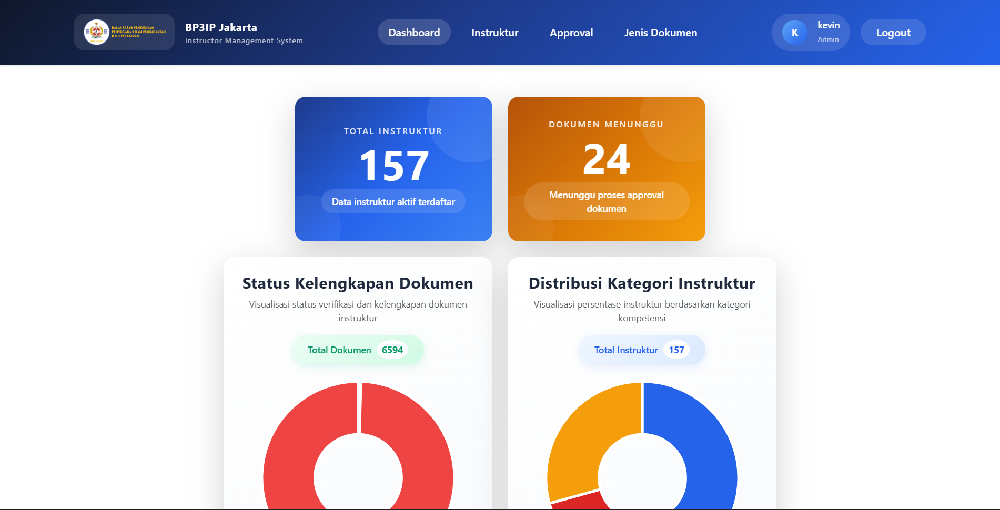
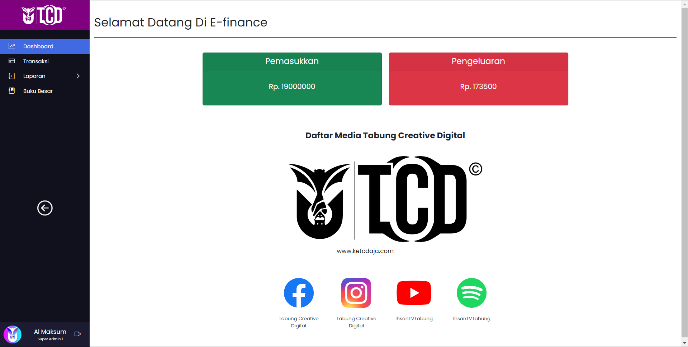
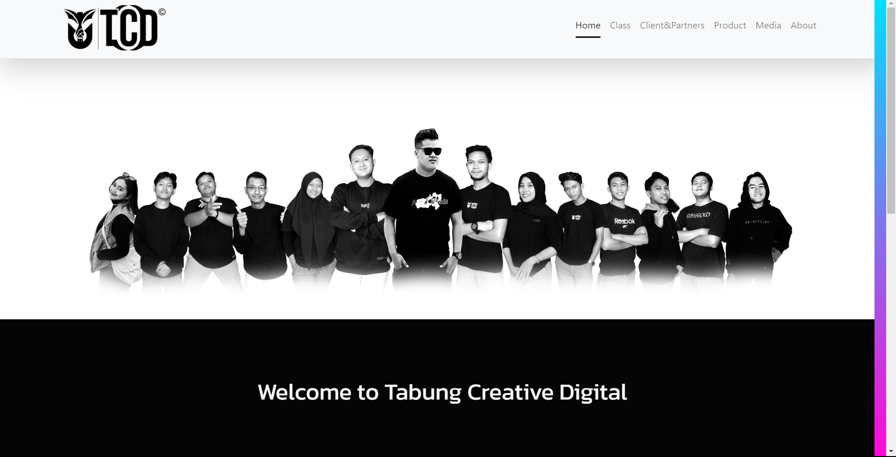

Company website for construction and software-development services, focused on responsive presentation and company information.
PROJECT PORTFOLIO
Mukhamad
Muhdzor Al Maksum
Programmer • UI/UX Designer • System Analyst
I build functional and scalable web applications with a focus on full-stack and backend development, creating business solutions, responsive interfaces, and maintainable systems using modern web technologies.
Prepared for IT Junior Programmer
ABOUT ME
Profile & Capabilities
Informatics Engineering graduate and programmer specializing in full-stack and backend web development.
Experienced in developing and maintaining web applications using PHP/Laravel, ReactJS and Django. Familiar with relational databases, REST API integration, Git/GitHub, Postman, responsive UI implementation and collaborative software development.
I enjoy translating requirements into practical features, troubleshooting existing applications, and continuously improving my technical skills through real-world projects.
Tools & Technology
HTML
CSS
JavaScript
PHP
Python
C++
ReactJS
Laravel
Django
Livewire
RestAPI
SSO Authentication
OIDC
JWT
Bootstrap
Tailwind
MySQL
SQLite
Git & GitHub
Postman
Figma
draw.io
WordPress
ArduinoIDE
02
SELECTED PROJECT 01
MR.Fixaja Management System
Business Management Application

Overview
A comprehensive management system developed to streamline digital service operations, covering the entire workflow from client orders and project management to payments and transactions. The system centralizes the management of orders, projects, clients, products, packages, content, invoices, payments, and transaction records within a single platform, providing administrators with structured workflows to monitor project progress, manage operational data, update order and project statuses, and handle related business processes efficiently. The application uses Laravel as the backend framework with REST APIs to connect and provide data services to the ReactJS frontend, while Livewire is utilized for dynamic management interfaces and interactive components, creating a structured and maintainable frontend-backend architecture.
My Contribution
- Implemented REST API to connect the Laravel backend with the ReactJS frontend.
- Built and integrated frontend interfaces using ReactJS to consume and display data provided by the Laravel REST API.
- Developed dynamic backend interfaces using Livewire and Bootstrap for interactive data management.
- Designed relational data models and implemented Eloquent relationships.
- Implemented order and project workflows with status handling.
- Implemented filtering, pagination, summaries and detail overlays.
- Structured controllers, services, models, Livewire components and views to maintain a modular and maintainable application architecture.
Authentication and Authorization
Dashboard Management
Job Order
Project Management
Content&Product Management
Transaction Management
03
SELECTED PROJECT 02
Perpustakaan BP3IP Jakarta
Institutional Library Website

Overview
An institutional library website developed from scratch using WordPress to provide centralized access to library information, services, collections, visitor resources, and institutional information for BP3IP Jakarta. The website includes structured pages for library services, profile, partnerships, visitor feedback, repository, online catalog (OPAC), and contact information, with a responsive interface designed to provide an accessible experience across desktop and mobile devices.
My Contribution
- Developed the institutional library website from scratch using WordPress based on the organization's requirements and content structure.
- Configured and customized the WordPress theme, including SiteOrigin and Unwind theme components, to establish the website layout and visual presentation.
- Customized website layouts and interface elements using HTML and custom CSS to achieve the required design and responsive behavior.
- Implemented and adjusted responsive navigation and mobile interface elements for better usability across different screen sizes.
- Structured and managed website content, including library services, profile information, visitor resources, repository, OPAC and contact information.
- Integrated external library resources and services, including the online catalog (OPAC), repository and other relevant external resources.
- Maintained website content, layout and functionality to support ongoing library operations and information delivery.
WordPress
Custom CSS
Responsive
Content Management
04
SELECTED PROJECT 03
Instructor Management System
BP3IP Jakarta — Institutional Application

Overview
An institutional instructor management system developed to centralize instructor data and document administration at BP3IP Jakarta. The application supports the management of instructor profiles, document completeness, verification and approval processes, while providing dashboard views to monitor instructor and document status. The system follows a frontend-backend architecture using ReactJS for the frontend and Django for the backend, with REST APIs used to facilitate communication between the two layers and support structured data management.
My Contribution
- Developed application features and business logic using Django for the backend and ReactJS for the frontend.
- Implemented REST API endpoints and integrated API communication between the Django backend and ReactJS frontend.
- Developed and integrated frontend interfaces for instructor data, document administration and status monitoring.
- Implemented authentication and authorization flows using Single Sign-On (SSO), OIDC and JWT-based authentication concepts.
- Designed and managed relational data using MySQL and SQLite according to application requirements.
- Implemented document completeness, verification and approval workflows to support instructor administration.
- Developed dashboard views to present instructor data and document status information in a structured and accessible format.
REST API
SSO Authentication
Authorization
Document Workflow
Dashboard
05
SELECTED PROJECT 04
E-Finance
Financial Management Application

Overview
A web-based financial management application developed to centralize and streamline organizational financial activities, including income, expenses, transactions and financial records. The system provides structured workflows for recording and managing financial data, while dashboard and reporting features help users monitor financial activity and review summarized income and expense information. The application uses Laravel as the backend framework and ReactJS for the frontend, with REST APIs facilitating communication between the application layers and MySQL managing the underlying relational data.
My Contribution
- Developed web-based financial management features and business workflows using Laravel and ReactJS.
- Implemented REST API communication between the Laravel backend and ReactJS frontend for financial data management.
- Developed functionality for recording, managing and monitoring income, expenses and financial transactions.
- Designed and managed relational data structures using MySQL to support financial records and reporting requirements.
- Developed dashboard interfaces to present summarized income, expense and transaction information.
- Implemented responsive user interfaces using ReactJS, JavaScript and Bootstrap.
Authentication
Authorization
Dashboard
Income
Expenses
Transactions
Reports
06
SELECTED PROJECT 05
Tabung Creative Digital
Web Application Development

Overview
A company profile and digital service website developed for Tabung Creative Digital to present the company's services, programs and activities while providing interactive features for prospective customers and participants. The website combines company information with service and educational program offerings, including bootcamps and classes that allow users to explore available programs and register online. The application was developed using Laravel and ReactJS with a structured database-driven architecture to support dynamic content, user interactions and business processes.
My Contribution
- Developed and maintained web application components using Laravel/PHP and ReactJS.
- Developed frontend and backend functionality following a structured MVC-based application architecture.
- Implemented responsive and interactive user interfaces using ReactJS, HTML, CSS and JavaScript.
- Developed database-driven features and backend business logic using Laravel and MySQL.
- Implemented functionality for displaying company services, programs, bootcamps and available classes.
- Developed registration functionality for users interested in joining available bootcamps and classes.
- Collaborated with the development team to implement business requirements, improve application functionality and maintain the website.
Company Profile
Digital Services
Bootcamp Registration
Class Registration
Client and Patner Information
Service Information
07
OTHER PROJECTS
Additional Experience
A digital cafe and coffee shop website designed to showcase the business, menu offerings and product information in an accessible and engaging format. The website provides customers with detailed information about available food and beverages, including menu categories, product descriptions and related details, helping visitors explore the cafe's offerings before making a purchase or visiting the location.
An IoT-based monitoring prototype developed to monitor temperature and humidity conditions during the fermentation process. The system uses environmental sensors to collect real-time temperature and humidity data, which can be processed and monitored to help maintain suitable conditions throughout the fermentation process. This project involved sensor integration, data monitoring logic and the implementation of an automated monitoring system for process observation.
WHY I FIT
Junior Programmer Strengths
Laravel / PHP
Hands-on experience developing web applications, backend logic, business workflows and database-driven features using Laravel and PHP.
ReactJS
Experience developing responsive and interactive frontend interfaces and integrating them with backend services through REST APIs.
REST API
Experience implementing and integrating REST APIs to connect frontend and backend applications, including JSON-based data communication and authentication concepts.
Database
Comfortable working with relational databases, data relationships, CRUD operations and structured data management using MySQL and SQLite.
Problem Solving
Used to debugging existing applications, analyzing requirements and implementing changes to improve functionality and resolve issues.
Teamwork & Adaptability
Experienced working collaboratively within development teams and adapting to different technologies, frameworks and project requirements.
08
LET'S BUILD SOMETHING
Thank You
Thank you for taking the time to review my project portfolio. I look forward to the opportunity to contribute my skills, learn from the team, and grow through real-world projects and challenges while delivering meaningful solutions for the organization.
Mukhamad Muhdzor Al Maksum
Programmer • UI/UX Designer • System Analyst